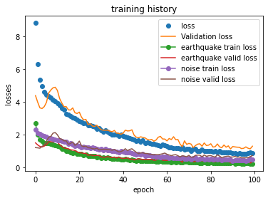

Denoise global seismic waveforms
Contents
Denoise global seismic waveforms#
Separate earthquake signals and noises on teleseismic waveform recordings using a two-branch U-net trained with global teleseismic data. The Denoiser uses the pretrained kernel WaveDecompNet(Yin et al 2022) to learn high-level features.
!pip3 install h5py
!pip3 install torch -f https://download.pytorch.org/whl/torch_stable.html
!pip3 install scipy
!pip3 install obspy
!pip3 install scikit-learn
!pip3 install pandas
!pip3 install multitaper
!pip3 install wget
!pip3 install matplotlib
Collecting h5py
Using cached h5py-3.8.0-cp310-cp310-macosx_10_9_x86_64.whl (3.2 MB)
Collecting numpy>=1.14.5
Using cached numpy-1.24.2-cp310-cp310-macosx_10_9_x86_64.whl (19.8 MB)
Installing collected packages: numpy, h5py
Successfully installed h5py-3.8.0 numpy-1.24.2
Looking in links: https://download.pytorch.org/whl/torch_stable.html
Collecting torch
Downloading torch-1.13.1-cp310-none-macosx_10_9_x86_64.whl (135.3 MB)
?25l ━━━━━━━━━━━━━━━━━━━━━━━━━━━━━━━━━━━━━━━━ 0.0/135.3 MB ? eta -:--:--
━━━━━━━━━━━━━━━━━━━━━━━━━━━━━━━━━━━━━━━━ 0.1/135.3 MB 1.5 MB/s eta 0:01:30
━━━━━━━━━━━━━━━━━━━━━━━━━━━━━━━━━━━━━━━━ 0.2/135.3 MB 2.7 MB/s eta 0:00:50
━━━━━━━━━━━━━━━━━━━━━━━━━━━━━━━━━━━━━━━━ 0.5/135.3 MB 4.6 MB/s eta 0:00:30
━━━━━━━━━━━━━━━━━━━━━━━━━━━━━━━━━━━━━━━━ 1.1/135.3 MB 8.0 MB/s eta 0:00:17
╸━━━━━━━━━━━━━━━━━━━━━━━━━━━━━━━━━━━━━━━ 2.4/135.3 MB 13.8 MB/s eta 0:00:10
━╺━━━━━━━━━━━━━━━━━━━━━━━━━━━━━━━━━━━━━━ 4.9/135.3 MB 23.5 MB/s eta 0:00:06
━━╺━━━━━━━━━━━━━━━━━━━━━━━━━━━━━━━━━━━━━ 7.2/135.3 MB 30.2 MB/s eta 0:00:05
━━╺━━━━━━━━━━━━━━━━━━━━━━━━━━━━━━━━━━━━━ 8.4/135.3 MB 29.8 MB/s eta 0:00:05
━━━╸━━━━━━━━━━━━━━━━━━━━━━━━━━━━━━━━━━━ 12.6/135.3 MB 73.5 MB/s eta 0:00:02
━━━╸━━━━━━━━━━━━━━━━━━━━━━━━━━━━━━━━━━━ 12.6/135.3 MB 73.5 MB/s eta 0:00:02
━━━━╺━━━━━━━━━━━━━━━━━━━━━━━━━━━━━━━━━━ 14.0/135.3 MB 61.2 MB/s eta 0:00:02
━━━━╸━━━━━━━━━━━━━━━━━━━━━━━━━━━━━━━━━━ 16.8/135.3 MB 55.5 MB/s eta 0:00:03
━━━━━╺━━━━━━━━━━━━━━━━━━━━━━━━━━━━━━━━━ 18.5/135.3 MB 55.0 MB/s eta 0:00:03
━━━━━━╺━━━━━━━━━━━━━━━━━━━━━━━━━━━━━━━━ 21.7/135.3 MB 51.2 MB/s eta 0:00:03
━━━━━━━╺━━━━━━━━━━━━━━━━━━━━━━━━━━━━━━━ 24.5/135.3 MB 73.2 MB/s eta 0:00:02
━━━━━━━╸━━━━━━━━━━━━━━━━━━━━━━━━━━━━━━━ 27.3/135.3 MB 84.3 MB/s eta 0:00:02
━━━━━━━━╸━━━━━━━━━━━━━━━━━━━━━━━━━━━━━━ 30.2/135.3 MB 84.7 MB/s eta 0:00:02
━━━━━━━━━╸━━━━━━━━━━━━━━━━━━━━━━━━━━━━━ 33.1/135.3 MB 83.8 MB/s eta 0:00:02
━━━━━━━━━━╺━━━━━━━━━━━━━━━━━━━━━━━━━━━━ 36.1/135.3 MB 82.3 MB/s eta 0:00:02
━━━━━━━━━━━╺━━━━━━━━━━━━━━━━━━━━━━━━━━━ 39.1/135.3 MB 84.5 MB/s eta 0:00:02
━━━━━━━━━━━━╺━━━━━━━━━━━━━━━━━━━━━━━━━━ 42.5/135.3 MB 83.7 MB/s eta 0:00:02
━━━━━━━━━━━━━╺━━━━━━━━━━━━━━━━━━━━━━━━━ 45.1/135.3 MB 81.1 MB/s eta 0:00:02
━━━━━━━━━━━━━╸━━━━━━━━━━━━━━━━━━━━━━━━━ 48.4/135.3 MB 81.9 MB/s eta 0:00:02
━━━━━━━━━━━━━━╸━━━━━━━━━━━━━━━━━━━━━━━━ 51.6/135.3 MB 82.7 MB/s eta 0:00:02
━━━━━━━━━━━━━━━╸━━━━━━━━━━━━━━━━━━━━━━━ 54.7/135.3 MB 80.6 MB/s eta 0:00:02
━━━━━━━━━━━━━━━━╸━━━━━━━━━━━━━━━━━━━━━━ 58.1/135.3 MB 86.5 MB/s eta 0:00:01
━━━━━━━━━━━━━━━━━╸━━━━━━━━━━━━━━━━━━━━━ 61.1/135.3 MB 86.8 MB/s eta 0:00:01
━━━━━━━━━━━━━━━━━╸━━━━━━━━━━━━━━━━━━━━━ 61.7/135.3 MB 85.2 MB/s eta 0:00:01
━━━━━━━━━━━━━━━━━━╸━━━━━━━━━━━━━━━━━━━━ 65.9/135.3 MB 76.6 MB/s eta 0:00:01
━━━━━━━━━━━━━━━━━━━╸━━━━━━━━━━━━━━━━━━━ 68.8/135.3 MB 80.9 MB/s eta 0:00:01
━━━━━━━━━━━━━━━━━━━━╸━━━━━━━━━━━━━━━━━━ 71.9/135.3 MB 76.8 MB/s eta 0:00:01
━━━━━━━━━━━━━━━━━━━━━╸━━━━━━━━━━━━━━━━━ 74.9/135.3 MB 80.9 MB/s eta 0:00:01
━━━━━━━━━━━━━━━━━━━━━━╸━━━━━━━━━━━━━━━━ 78.1/135.3 MB 83.8 MB/s eta 0:00:01
━━━━━━━━━━━━━━━━━━━━━━━╺━━━━━━━━━━━━━━━ 81.2/135.3 MB 85.6 MB/s eta 0:00:01
━━━━━━━━━━━━━━━━━━━━━━━╸━━━━━━━━━━━━━━━ 83.0/135.3 MB 87.6 MB/s eta 0:00:01
━━━━━━━━━━━━━━━━━━━━━━━╸━━━━━━━━━━━━━━━ 83.0/135.3 MB 87.6 MB/s eta 0:00:01
━━━━━━━━━━━━━━━━━━━━━━━╸━━━━━━━━━━━━━━━ 83.0/135.3 MB 87.6 MB/s eta 0:00:01
━━━━━━━━━━━━━━━━━━━━━━━━╸━━━━━━━━━━━━━━ 85.1/135.3 MB 47.5 MB/s eta 0:00:02
━━━━━━━━━━━━━━━━━━━━━━━━━╺━━━━━━━━━━━━━ 88.3/135.3 MB 47.6 MB/s eta 0:00:01
━━━━━━━━━━━━━━━━━━━━━━━━━━╺━━━━━━━━━━━━ 91.6/135.3 MB 48.9 MB/s eta 0:00:01
━━━━━━━━━━━━━━━━━━━━━━━━━━━╺━━━━━━━━━━━ 94.8/135.3 MB 89.5 MB/s eta 0:00:01
━━━━━━━━━━━━━━━━━━━━━━━━━━━━╺━━━━━━━━━━ 98.0/135.3 MB 90.8 MB/s eta 0:00:01
━━━━━━━━━━━━━━━━━━━━━━━━━━━━╺━━━━━━━━━ 101.3/135.3 MB 91.9 MB/s eta 0:00:01
━━━━━━━━━━━━━━━━━━━━━━━━━━━━━╺━━━━━━━━ 104.5/135.3 MB 91.1 MB/s eta 0:00:01
━━━━━━━━━━━━━━━━━━━━━━━━━━━━━━╺━━━━━━━ 108.0/135.3 MB 92.3 MB/s eta 0:00:01
━━━━━━━━━━━━━━━━━━━━━━━━━━━━━━━╺━━━━━━ 111.8/135.3 MB 94.1 MB/s eta 0:00:01
━━━━━━━━━━━━━━━━━━━━━━━━━━━━━━━━╺━━━━━ 115.5/135.3 MB 92.9 MB/s eta 0:00:01
━━━━━━━━━━━━━━━━━━━━━━━━━━━━━━━━━╺━━━━ 119.1/135.3 MB 92.8 MB/s eta 0:00:01
━━━━━━━━━━━━━━━━━━━━━━━━━━━━━━━━━━╸━━━ 122.9/135.3 MB 96.2 MB/s eta 0:00:01
━━━━━━━━━━━━━━━━━━━━━━━━━━━━━━━━━━━╺━━ 126.2/135.3 MB 95.0 MB/s eta 0:00:01
━━━━━━━━━━━━━━━━━━━━━━━━━━━━━━━━━━━━╺━ 129.5/135.3 MB 95.6 MB/s eta 0:00:01
━━━━━━━━━━━━━━━━━━━━━━━━━━━━━━━━━━━━━╺ 132.8/135.3 MB 95.5 MB/s eta 0:00:01
━━━━━━━━━━━━━━━━━━━━━━━━━━━━━━━━━━━━━╸ 135.3/135.3 MB 95.4 MB/s eta 0:00:01
━━━━━━━━━━━━━━━━━━━━━━━━━━━━━━━━━━━━━╸ 135.3/135.3 MB 95.4 MB/s eta 0:00:01
━━━━━━━━━━━━━━━━━━━━━━━━━━━━━━━━━━━━━╸ 135.3/135.3 MB 95.4 MB/s eta 0:00:01
━━━━━━━━━━━━━━━━━━━━━━━━━━━━━━━━━━━━━╸ 135.3/135.3 MB 95.4 MB/s eta 0:00:01
━━━━━━━━━━━━━━━━━━━━━━━━━━━━━━━━━━━━━╸ 135.3/135.3 MB 95.4 MB/s eta 0:00:01
━━━━━━━━━━━━━━━━━━━━━━━━━━━━━━━━━━━━━━ 135.3/135.3 MB 24.0 MB/s eta 0:00:00
?25h
Collecting typing-extensions
Using cached typing_extensions-4.5.0-py3-none-any.whl (27 kB)
Installing collected packages: typing-extensions, torch
Successfully installed torch-1.13.1 typing-extensions-4.5.0
Collecting scipy
Downloading scipy-1.10.1-cp310-cp310-macosx_10_9_x86_64.whl (35.1 MB)
?25l ━━━━━━━━━━━━━━━━━━━━━━━━━━━━━━━━━━━━━━━━ 0.0/35.1 MB ? eta -:--:--
━━━━━━━━━━━━━━━━━━━━━━━━━━━━━━━━━━━━━━━━ 0.1/35.1 MB 1.6 MB/s eta 0:00:23
━━━━━━━━━━━━━━━━━━━━━━━━━━━━━━━━━━━━━━━━ 0.2/35.1 MB 3.0 MB/s eta 0:00:12
╸━━━━━━━━━━━━━━━━━━━━━━━━━━━━━━━━━━━━━━━ 0.6/35.1 MB 5.1 MB/s eta 0:00:07
━╺━━━━━━━━━━━━━━━━━━━━━━━━━━━━━━━━━━━━━━ 1.2/35.1 MB 8.7 MB/s eta 0:00:04
━━╸━━━━━━━━━━━━━━━━━━━━━━━━━━━━━━━━━━━━━ 2.5/35.1 MB 14.2 MB/s eta 0:00:03
━━━━━╸━━━━━━━━━━━━━━━━━━━━━━━━━━━━━━━━━━ 5.0/35.1 MB 23.5 MB/s eta 0:00:02
━━━━━━━━╺━━━━━━━━━━━━━━━━━━━━━━━━━━━━━━━ 7.0/35.1 MB 30.2 MB/s eta 0:00:01
━━━━━━━━━╸━━━━━━━━━━━━━━━━━━━━━━━━━━━━━━ 8.4/35.1 MB 29.5 MB/s eta 0:00:01
━━━━━━━━━━━━━━╺━━━━━━━━━━━━━━━━━━━━━━━━━ 12.6/35.1 MB 71.1 MB/s eta 0:00:01
━━━━━━━━━━━━━━━━━╺━━━━━━━━━━━━━━━━━━━━━━ 15.0/35.1 MB 75.1 MB/s eta 0:00:01
━━━━━━━━━━━━━━━━━━╸━━━━━━━━━━━━━━━━━━━━━ 16.4/35.1 MB 63.1 MB/s eta 0:00:01
━━━━━━━━━━━━━━━━━━━━━━╸━━━━━━━━━━━━━━━━━ 19.8/35.1 MB 81.0 MB/s eta 0:00:01
━━━━━━━━━━━━━━━━━━━━━━━━━━╺━━━━━━━━━━━━━ 22.9/35.1 MB 73.6 MB/s eta 0:00:01
━━━━━━━━━━━━━━━━━━━━━━━━━━━━╸━━━━━━━━━━━ 25.4/35.1 MB 87.6 MB/s eta 0:00:01
━━━━━━━━━━━━━━━━━━━━━━━━━━━━━━━━╸━━━━━━━ 28.9/35.1 MB 86.3 MB/s eta 0:00:01
━━━━━━━━━━━━━━━━━━━━━━━━━━━━━━━━━━━━╸━━━ 32.1/35.1 MB 91.5 MB/s eta 0:00:01
━━━━━━━━━━━━━━━━━━━━━━━━━━━━━━━━━━━━━━━╸ 35.1/35.1 MB 93.7 MB/s eta 0:00:01
━━━━━━━━━━━━━━━━━━━━━━━━━━━━━━━━━━━━━━━╸ 35.1/35.1 MB 93.7 MB/s eta 0:00:01
━━━━━━━━━━━━━━━━━━━━━━━━━━━━━━━━━━━━━━━╸ 35.1/35.1 MB 93.7 MB/s eta 0:00:01
━━━━━━━━━━━━━━━━━━━━━━━━━━━━━━━━━━━━━━━╸ 35.1/35.1 MB 93.7 MB/s eta 0:00:01
━━━━━━━━━━━━━━━━━━━━━━━━━━━━━━━━━━━━━━━━ 35.1/35.1 MB 40.2 MB/s eta 0:00:00
?25h
Requirement already satisfied: numpy<1.27.0,>=1.19.5 in /Users/qb/opt/anaconda3/envs/pubcode/lib/python3.10/site-packages (from scipy) (1.24.2)
Installing collected packages: scipy
Successfully installed scipy-1.10.1
Collecting obspy
Using cached obspy-1.4.0-cp310-cp310-macosx_10_9_x86_64.whl (14.1 MB)
Requirement already satisfied: decorator in /Users/qb/opt/anaconda3/envs/pubcode/lib/python3.10/site-packages (from obspy) (5.1.1)
Requirement already satisfied: lxml in /Users/qb/opt/anaconda3/envs/pubcode/lib/python3.10/site-packages (from obspy) (4.9.2)
Requirement already satisfied: sqlalchemy in /Users/qb/opt/anaconda3/envs/pubcode/lib/python3.10/site-packages (from obspy) (1.4.46)
Requirement already satisfied: requests in /Users/qb/opt/anaconda3/envs/pubcode/lib/python3.10/site-packages (from obspy) (2.28.2)
Collecting matplotlib>=3.3
Using cached matplotlib-3.7.0-cp310-cp310-macosx_10_12_x86_64.whl (7.4 MB)
Requirement already satisfied: scipy>=1.7 in /Users/qb/opt/anaconda3/envs/pubcode/lib/python3.10/site-packages (from obspy) (1.10.1)
Requirement already satisfied: numpy>=1.20 in /Users/qb/opt/anaconda3/envs/pubcode/lib/python3.10/site-packages (from obspy) (1.24.2)
Requirement already satisfied: setuptools in /Users/qb/opt/anaconda3/envs/pubcode/lib/python3.10/site-packages (from obspy) (65.6.3)
Collecting cycler>=0.10
Using cached cycler-0.11.0-py3-none-any.whl (6.4 kB)
Collecting fonttools>=4.22.0
Using cached fonttools-4.38.0-py3-none-any.whl (965 kB)
Collecting pyparsing>=2.3.1
Using cached pyparsing-3.0.9-py3-none-any.whl (98 kB)
Requirement already satisfied: packaging>=20.0 in /Users/qb/opt/anaconda3/envs/pubcode/lib/python3.10/site-packages (from matplotlib>=3.3->obspy) (23.0)
Requirement already satisfied: python-dateutil>=2.7 in /Users/qb/opt/anaconda3/envs/pubcode/lib/python3.10/site-packages (from matplotlib>=3.3->obspy) (2.8.2)
Collecting contourpy>=1.0.1
Using cached contourpy-1.0.7-cp310-cp310-macosx_10_9_x86_64.whl (244 kB)
Collecting pillow>=6.2.0
Using cached Pillow-9.4.0-2-cp310-cp310-macosx_10_10_x86_64.whl (3.3 MB)
Collecting kiwisolver>=1.0.1
Using cached kiwisolver-1.4.4-cp310-cp310-macosx_10_9_x86_64.whl (65 kB)
Requirement already satisfied: idna<4,>=2.5 in /Users/qb/opt/anaconda3/envs/pubcode/lib/python3.10/site-packages (from requests->obspy) (3.4)
Requirement already satisfied: charset-normalizer<4,>=2 in /Users/qb/opt/anaconda3/envs/pubcode/lib/python3.10/site-packages (from requests->obspy) (3.0.1)
Requirement already satisfied: urllib3<1.27,>=1.21.1 in /Users/qb/opt/anaconda3/envs/pubcode/lib/python3.10/site-packages (from requests->obspy) (1.26.14)
Requirement already satisfied: certifi>=2017.4.17 in /Users/qb/opt/anaconda3/envs/pubcode/lib/python3.10/site-packages (from requests->obspy) (2022.12.7)
Requirement already satisfied: greenlet!=0.4.17 in /Users/qb/opt/anaconda3/envs/pubcode/lib/python3.10/site-packages (from sqlalchemy->obspy) (2.0.2)
Requirement already satisfied: six>=1.5 in /Users/qb/opt/anaconda3/envs/pubcode/lib/python3.10/site-packages (from python-dateutil>=2.7->matplotlib>=3.3->obspy) (1.16.0)
Installing collected packages: pyparsing, pillow, kiwisolver, fonttools, cycler, contourpy, matplotlib, obspy
Successfully installed contourpy-1.0.7 cycler-0.11.0 fonttools-4.38.0 kiwisolver-1.4.4 matplotlib-3.7.0 obspy-1.4.0 pillow-9.4.0 pyparsing-3.0.9
Collecting scikit-learn
Downloading scikit_learn-1.2.1-cp310-cp310-macosx_10_9_x86_64.whl (9.1 MB)
?25l ━━━━━━━━━━━━━━━━━━━━━━━━━━━━━━━━━━━━━━━━ 0.0/9.1 MB ? eta -:--:--
━━━━━━━━━━━━━━━━━━━━━━━━━━━━━━━━━━━━━━━━ 0.0/9.1 MB 1.1 MB/s eta 0:00:09
╸━━━━━━━━━━━━━━━━━━━━━━━━━━━━━━━━━━━━━━━ 0.2/9.1 MB 2.7 MB/s eta 0:00:04
━━╺━━━━━━━━━━━━━━━━━━━━━━━━━━━━━━━━━━━━━ 0.5/9.1 MB 4.8 MB/s eta 0:00:02
━━━━━╺━━━━━━━━━━━━━━━━━━━━━━━━━━━━━━━━━━ 1.2/9.1 MB 8.3 MB/s eta 0:00:01
━━━━━━━━━━╸━━━━━━━━━━━━━━━━━━━━━━━━━━━━━ 2.5/9.1 MB 14.2 MB/s eta 0:00:01
━━━━━━━━━━━━━━━━━━━━━━━━╸━━━━━━━━━━━━━━━ 5.6/9.1 MB 25.8 MB/s eta 0:00:01
━━━━━━━━━━━━━━━━━━━━━━━━━━━━╺━━━━━━━━━━━ 6.4/9.1 MB 25.0 MB/s eta 0:00:01
━━━━━━━━━━━━━━━━━━━━━━━━━━━━━━━━━━━━━━━╸ 9.1/9.1 MB 33.4 MB/s eta 0:00:01
━━━━━━━━━━━━━━━━━━━━━━━━━━━━━━━━━━━━━━━━ 9.1/9.1 MB 28.7 MB/s eta 0:00:00
?25h
^C
ERROR: Operation cancelled by user
Collecting pandas
Using cached pandas-1.5.3-cp310-cp310-macosx_10_9_x86_64.whl (12.0 MB)
Requirement already satisfied: numpy>=1.21.0 in /Users/qb/opt/anaconda3/envs/pubcode/lib/python3.10/site-packages (from pandas) (1.24.2)
Requirement already satisfied: python-dateutil>=2.8.1 in /Users/qb/opt/anaconda3/envs/pubcode/lib/python3.10/site-packages (from pandas) (2.8.2)
Requirement already satisfied: pytz>=2020.1 in /Users/qb/opt/anaconda3/envs/pubcode/lib/python3.10/site-packages (from pandas) (2022.7.1)
Requirement already satisfied: six>=1.5 in /Users/qb/opt/anaconda3/envs/pubcode/lib/python3.10/site-packages (from python-dateutil>=2.8.1->pandas) (1.16.0)
Installing collected packages: pandas
Import modules#
import os
import h5py
import math
import time
import wget
import torch
import random
import numpy as np
import torch.nn as nn
import torch.nn.functional as F
from matplotlib import pyplot as plt
from numpy.random import default_rng
from torch.utils.data import Dataset
from torch.utils.data import DataLoader
from sklearn.model_selection import train_test_split
Auto-encoder architecture (U-net)#
We use a pre-trained simpler model as the kernel of the T-model class
class T_model(nn.Module):
def __init__(self, model):
super(T_model, self).__init__()
self.enc1 = nn.Conv1d(3, 8, 45, stride=1, padding='same', dtype=torch.float64)
self.bn1 = nn.BatchNorm1d(8, dtype=torch.float64)
self.enc2 = nn.Conv1d(8, 8, 21, stride=2, padding=10, dtype=torch.float64)
self.bn2 = nn.BatchNorm1d(8, dtype=torch.float64)
self.enc3 = nn.Conv1d(8, 8, 21, stride=2, padding=10, dtype=torch.float64)
self.bn3 = nn.BatchNorm1d(8, dtype=torch.float64)
self.enc4 = nn.Conv1d(8, 8, 21, stride=2, padding=10, dtype=torch.float64)
self.bn4 = nn.BatchNorm1d(8, dtype=torch.float64)
self.enc5 = nn.Conv1d(8, 3, 9, stride=1, padding='same', dtype=torch.float64)
self.bn5 = nn.BatchNorm1d(3, dtype=torch.float64)
self.fc6 = nn.Linear(750, 600, dtype=torch.float64)
self.bn6 = nn.BatchNorm1d(3, dtype=torch.float64)
self.model = model
self.fc61 = nn.Linear(600, 750, dtype=torch.float64)
self.fc62 = nn.Linear(600, 750, dtype=torch.float64)
self.bn61 = nn.BatchNorm1d(3, dtype=torch.float64)
self.bn62 = nn.BatchNorm1d(3, dtype=torch.float64)
self.dec51 = nn.ConvTranspose1d(3, 8, 9, stride=1, padding=4, output_padding=0, dtype=torch.float64)
self.dec52 = nn.ConvTranspose1d(3, 8, 9, stride=1, padding=4, output_padding=0, dtype=torch.float64)
self.bn51 = nn.BatchNorm1d(8, dtype=torch.float64)
self.bn52 = nn.BatchNorm1d(8, dtype=torch.float64)
self.dec41 = nn.ConvTranspose1d(8, 8, 21, stride=2, padding=10, output_padding=1, dtype=torch.float64)
self.dec42 = nn.ConvTranspose1d(8, 8, 21, stride=2, padding=10, output_padding=1, dtype=torch.float64)
self.bn41 = nn.BatchNorm1d(8, dtype=torch.float64)
self.bn42 = nn.BatchNorm1d(8, dtype=torch.float64)
self.dec31 = nn.ConvTranspose1d(8, 8, 21, stride=2, padding=10, output_padding=1, dtype=torch.float64)
self.dec32 = nn.ConvTranspose1d(8, 8, 21, stride=2, padding=10, output_padding=1, dtype=torch.float64)
self.bn31 = nn.BatchNorm1d(8, dtype=torch.float64)
self.bn32 = nn.BatchNorm1d(8, dtype=torch.float64)
self.dec21 = nn.ConvTranspose1d(8, 8, 21, stride=2, padding=10, output_padding=1, dtype=torch.float64)
self.dec22 = nn.ConvTranspose1d(8, 8, 21, stride=2, padding=10, output_padding=1, dtype=torch.float64)
self.bn21 = nn.BatchNorm1d(8, dtype=torch.float64)
self.bn22 = nn.BatchNorm1d(8, dtype=torch.float64)
self.dec11 = nn.ConvTranspose1d(8, 3, 45, stride=1, padding=22, output_padding=0, dtype=torch.float64)
self.dec12 = nn.ConvTranspose1d(8, 3, 45, stride=1, padding=22, output_padding=0, dtype=torch.float64)
self.bn11 = nn.BatchNorm1d(3, dtype=torch.float64)
self.bn12 = nn.BatchNorm1d(3, dtype=torch.float64)
def forward(self, x):
x = F.relu(self.bn1(self.enc1(x)))
#x = F.relu(self.bn2(self.enc2(x)))
x0= self.enc3(x)
x = F.relu(self.bn3(x0))
#x = F.relu(self.bn4(self.enc4(x)))
x1= self.enc5(x)
x = F.relu(self.bn5(x1))
x = F.relu(self.bn6(self.fc6(x)))
y = self.model(x)
y1 = y[0]
y2 = y[1]
y1 = self.bn61(self.fc61(F.relu(y1)))
y2 = self.bn62(self.fc62(F.relu(y2)))
y1 = self.bn51(self.dec51(F.relu(y1)) + x0)
y2 = self.bn52(self.dec52(F.relu(y2)) + x0)
# y1 = self.bn41(self.dec41(F.relu(y1)))
# y2 = self.bn42(self.dec42(F.relu(y2)))
y1 = self.bn31(self.dec31(F.relu(y1)))
y2 = self.bn32(self.dec32(F.relu(y2)))
# y1 = self.bn21(self.dec21(F.relu(y1)))
# y2 = self.bn22(self.dec22(F.relu(y2)))
y1 = self.bn11(self.dec11(F.relu(y1)))
y2 = self.bn12(self.dec12(F.relu(y2)))
return y1, y2
Data class for pytorch#
# covert the numpy array to torch tensor for ML
class WaveformDataset(Dataset):
def __init__(self, X_train, Y_train):
self.X_train = np.moveaxis(X_train, 1, -1)
self.Y_train = np.moveaxis(Y_train, 1, -1)
def __len__(self):
return self.X_train.shape[0]
def __getitem__(self, idx):
X_waveform = self.X_train[idx]
Y_waveform = self.Y_train[idx]
return X_waveform, Y_waveform
New loss function#
# New loss function combining mean-squared-error and waveform cross-coreelation
class CCMSELoss(torch.nn.Module):
def __init__(self, use_weight=False):
super().__init__()
self.use_weight = use_weight
def forward(self, x, y, weight=1):
cc = torch.sum(torch.mul(x, y), dim=2)
n1 = torch.sum(torch.square(x), dim=2)
n2 = torch.sum(torch.square(y), dim=2)
cc = cc / torch.sqrt(n1 * n2)
mse = torch.mean(torch.square(x - y), dim=2)
if self.use_weight:
cc = torch.nanmean(cc, dim=1)
mse = torch.nanmean(mse, dim=1)
ccmseloss = torch.nanmean(mse/weight) + 1 - torch.nanmean(cc)
else:
ccmseloss = torch.nanmean(mse) + 1 - torch.nanmean(cc)
return ccmseloss
Early stopping scheme for training#
# from https://github.com/Bjarten/early-stopping-pytorch
class EarlyStopping:
"""Early stops the training if validation loss doesn't improve after a given patience."""
def __init__(self, patience=7, verbose=False, delta=0, path='checkpoint.pt', trace_func=print):
"""
Args:
patience (int): How long to wait after last time validation loss improved.
Default: 7
verbose (bool): If True, prints a message for each validation loss improvement.
Default: False
delta (float): Minimum change in the monitored quantity to qualify as an improvement.
Default: 0
path (str): Path for the checkpoint to be saved to.
Default: 'checkpoint.pt'
trace_func (function): trace print function.
Default: print
"""
self.patience = patience
self.verbose = verbose
self.counter = 0
self.best_score = None
self.early_stop = False
self.val_loss_min = np.Inf
self.delta = delta
self.path = path
self.trace_func = trace_func
def __call__(self, val_loss, model):
score = -val_loss
if self.best_score is None:
self.best_score = score
self.save_checkpoint(val_loss, model)
elif score < self.best_score + self.delta:
self.counter += 1
self.trace_func(f'EarlyStopping counter: {self.counter} out of {self.patience}')
if self.counter >= self.patience:
self.early_stop = True
else:
self.best_score = score
self.save_checkpoint(val_loss, model)
self.counter = 0
def save_checkpoint(self, val_loss, model):
'''Saves model when validation loss decrease.'''
if self.verbose:
self.trace_func(
f'Validation loss decreased ({self.val_loss_min:.6f} --> {val_loss:.6f}). Saving model ...')
torch.save(model.state_dict(), self.path)
self.val_loss_min = val_loss
Training function#
# Training scheme, with data augmentation on the fly
def training_loop_branches_augmentation(train_dataloader, validate_dataloader, model, loss_fn, optimizer, epochs,
patience, device, minimum_epochs=None, npts=3000, mid_pt=25000, strmax=6):
# to track the average training loss per epoch as the model trains
avg_train_losses = []
avg_train_losses1 = [] # earthquake average loss with epoch
avg_train_losses2 = [] # noise average loss with epoch
# to track the average validation loss per epoch as the model trains
avg_valid_losses = []
avg_valid_losses1 = [] # earthquake average loss with epoch
avg_valid_losses2 = [] # noise average loss with epoch
# initialize the early_stopping object
early_stopping = EarlyStopping(patience=patience, verbose=True)
for epoch in range(1, epochs + 1):
# estimate time for each epoch
starttime = time.time()
# to track the training loss as the model trains
train_losses = []
train_losses1 = [] # earthquake loss
train_losses2 = [] # noise loss
# to track the validation loss as the model trains
valid_losses = []
valid_losses1 = [] # earthquake loss
valid_losses2 = [] # noise loss
# ======================= training =======================
# initialize the model for training
model.train()
size = len(train_dataloader.dataset)
for batch, (X0, y0) in enumerate(train_dataloader):
# stack and shift
nbatch = X0.size(0)
std_wgt = torch.ones(nbatch, dtype=torch.float64)
quak2 = torch.zeros(nbatch, y0.size(1), npts * 2, dtype=torch.float64)
quake = torch.zeros(y0.size(), dtype=torch.float64)
stack = torch.zeros(y0.size(), dtype=torch.float64)
rng = default_rng(batch * epoch)
rng_snr = default_rng(batch * epoch + 1)
rng_sqz = default_rng(batch * epoch + 2)
start_pt = rng.choice(npts - int(npts * 0.2), nbatch) + int(npts * 0.1)
snr = 10 ** rng_snr.uniform(-0.3, 1, nbatch)
sqz = rng_sqz.choice(int(strmax), nbatch) + 1
pt1 = mid_pt - sqz * npts
pt2 = mid_pt + sqz * npts
for i in np.arange(nbatch):
# %% squeeze earthquake signal
quak2[i] = X0[i, :, pt1[i]:pt2[i]:sqz[i]]
# %% shift earthquake signal
tmp = quak2[i, :, start_pt[i]:start_pt[i] + npts]
for j in np.arange(X0.size(1)):
quake[i, j] = torch.div(torch.sub(tmp[j], torch.mean(tmp[j], dim=-1)),
torch.std(tmp[j], dim=-1) + 1e-12) * snr[i]
# %% stack signal and noise
stack[i] = quake[i] + y0[i]
# %% normalize
scale_mean = torch.mean(stack[i], dim=1)
scale_std = torch.std(stack[i], dim=1) + 1e-12
std_wgt[i] = torch.nanmean(scale_std)
for j in np.arange(X0.size(1)):
stack[i, j] = torch.div(torch.sub(stack[i, j], scale_mean[j]), scale_std[j])
quake[i, j] = torch.div(torch.sub(quake[i, j], scale_mean[j]), scale_std[j])
X, y = stack.to(device), quake.to(device)
snr = torch.from_numpy(snr).to(device)
std_wgt = std_wgt.to(device)
# Compute prediction and loss
pred1, pred2 = model(X)
loss1 = loss_fn(pred1, y, snr**2)
loss2 = loss_fn(pred2, X - y)
loss3 = loss_fn(pred1 + pred2, X, std_wgt**2)
loss = loss1 + loss2 + loss3
# record training loss
train_losses.append(loss.item())
train_losses1.append(loss1.item())
train_losses2.append(loss2.item())
# Backpropagation
optimizer.zero_grad()
loss.backward()
optimizer.step()
# ======================= validating =======================
# initialize the model for training
model.eval()
with torch.no_grad():
for X0, y0 in validate_dataloader:
# stack and shift
nbatch = X0.size(0)
std_wgt = torch.ones(nbatch, dtype=torch.float64)
quak2 = torch.zeros(nbatch, y0.size(1), npts * 2, dtype=torch.float64)
quake = torch.zeros(y0.size(), dtype=torch.float64)
stack = torch.zeros(y0.size(), dtype=torch.float64)
rng = default_rng(batch * epoch)
rng_snr = default_rng(batch * epoch + 1)
rng_sqz = default_rng(batch * epoch + 2)
start_pt = rng.choice(npts - int(npts * 0.2), nbatch) + int(npts * 0.1)
snr = 10 ** rng_snr.uniform(-0.3, 1, nbatch)
sqz = rng_sqz.choice(int(strmax), nbatch) + 1
pt1 = mid_pt - sqz * npts
pt2 = mid_pt + sqz * npts
for i in np.arange(nbatch):
# %% squeeze earthquake signal
quak2[i] = X0[i, :, pt1[i]:pt2[i]:sqz[i]]
# %% shift earthquake signal
tmp = quak2[i, :, start_pt[i]:start_pt[i] + npts]
for j in np.arange(X0.size(1)):
quake[i, j] = torch.div(torch.sub(tmp[j], torch.mean(tmp[j], dim=-1)),
torch.std(tmp[j], dim=-1) + 1e-12) * snr[i]
# %% stack signal and noise
stack[i] = quake[i] + y0[i]
# %% normalize
scale_mean = torch.mean(stack[i], dim=1)
scale_std = torch.std(stack[i], dim=1) + 1e-12
std_wgt[i] = torch.nanmean(scale_std)
for j in np.arange(X0.size(1)):
stack[i, j] = torch.div(torch.sub(stack[i, j], scale_mean[j]), scale_std[j])
quake[i, j] = torch.div(torch.sub(quake[i, j], scale_mean[j]), scale_std[j])
X, y = stack.to(device), quake.to(device)
snr = torch.from_numpy(snr).to(device)
std_wgt = std_wgt.to(device)
pred1, pred2 = model(X)
loss1 = loss_fn(pred1, y, snr**2)
loss2 = loss_fn(pred2, X - y)
loss3 = loss_fn(pred1 + pred2, X, std_wgt**2)
loss = loss1 + loss2 + loss3
# record validation loss
valid_losses.append(loss.item())
valid_losses1.append(loss1.item())
valid_losses2.append(loss2.item())
# calculate average loss over an epoch
# total loss
train_loss = np.average(train_losses)
valid_loss = np.average(valid_losses)
avg_train_losses.append(train_loss)
avg_valid_losses.append(valid_loss)
# earthquake waveform loss
train_loss1 = np.average(train_losses1)
valid_loss1 = np.average(valid_losses1)
avg_train_losses1.append(train_loss1)
avg_valid_losses1.append(valid_loss1)
# ambient noise waveform loss
train_loss2 = np.average(train_losses2)
valid_loss2 = np.average(valid_losses2)
avg_train_losses2.append(train_loss2)
avg_valid_losses2.append(valid_loss2)
# print training/validation statistics
epoch_len = len(str(epochs))
print_msg = (f'[{epoch:>{epoch_len}}/{epochs:>{epoch_len}}] ' +
f'train_loss: {train_loss:.5f} ' +
f'valid_loss: {valid_loss:.5f}\n' +
f'time per epoch: {(time.time() - starttime):.3f} s')
print(print_msg)
# clear lists to track next epoch
train_losses = []
valid_losses = []
if (minimum_epochs is None) or ((minimum_epochs is not None) and (epoch > minimum_epochs)):
# early_stopping needs the validation loss to check if it has decresed,
# and if it has, it will make a checkpoint of the current model
early_stopping(valid_loss, model)
if early_stopping.early_stop:
print("Early stopping")
break
# load the last checkpoint with the best model
model.load_state_dict(torch.load('checkpoint.pt'))
partial_loss = [avg_train_losses1, avg_valid_losses1, avg_train_losses2, avg_valid_losses2]
return model, avg_train_losses, avg_valid_losses, partial_loss
Download seismic data and pre-trained kernel#
The data is aranged in arrays of 3-component seismograms. The labels are “earthquakes” and “noise”, the data is sampled at 10Hz.
wget.download("https://www.dropbox.com/s/jxg19pqj36deomv/chunk500.hdf5?dl=1")
# use shell command to download *py properly
!wget --no-cache --backups=1 {"https://raw.githubusercontent.com/qibinshi/TeleseismicDenoiser/main/example/Model_and_datasets_1D_all_snr_40/Branch_Encoder_Decoder_LSTM/Branch_Encoder_Decoder_LSTM_Model.pth"}
!wget --no-cache --backups=1 {"https://raw.githubusercontent.com/qibinshi/TeleseismicDenoiser/main/src/denoise/autoencoder_1D_models_torch.py"}
--2022-12-02 19:17:20-- https://raw.githubusercontent.com/qibinshi/TeleseismicDenoiser/main/example/Model_and_datasets_1D_all_snr_40/Branch_Encoder_Decoder_LSTM/Branch_Encoder_Decoder_LSTM_Model.pth
Resolving raw.githubusercontent.com (raw.githubusercontent.com)... 185.199.108.133, 185.199.109.133, 185.199.110.133, ...
Connecting to raw.githubusercontent.com (raw.githubusercontent.com)|185.199.108.133|:443... connected.
HTTP request sent, awaiting response... 200 OK
Length: 1499003 (1.4M) [application/octet-stream]
Saving to: ‘Branch_Encoder_Decoder_LSTM_Model.pth’
Branch_Encoder_Deco 100%[===================>] 1.43M --.-KB/s in 0.04s
2022-12-02 19:17:20 (33.0 MB/s) - ‘Branch_Encoder_Decoder_LSTM_Model.pth’ saved [1499003/1499003]
--2022-12-02 19:17:21-- https://raw.githubusercontent.com/qibinshi/TeleseismicDenoiser/main/src/denoise/autoencoder_1D_models_torch.py
Resolving raw.githubusercontent.com (raw.githubusercontent.com)... 185.199.108.133, 185.199.109.133, 185.199.110.133, ...
Connecting to raw.githubusercontent.com (raw.githubusercontent.com)|185.199.108.133|:443... connected.
HTTP request sent, awaiting response... 200 OK
Length: 33171 (32K) [text/plain]
Failed to rename autoencoder_1D_models_torch.py to autoencoder_1D_models_torch.py.1: (2) No such file or directory
Saving to: ‘autoencoder_1D_models_torch.py’
autoencoder_1D_mode 100%[===================>] 32.39K --.-KB/s in 0.001s
2022-12-02 19:17:21 (21.3 MB/s) - ‘autoencoder_1D_models_torch.py’ saved [33171/33171]
Read H5 file and create noisy dataset#
We extract the window surrounding S-wave pulse and stretch to 150s. We stack 150s-long S waves with noises to create noisy dataset.
model_dir = 'trained_model'
if not os.path.exists(model_dir):
os.mkdir(model_dir)
wave_raw = 'chunk500.hdf5'
frac = 0.1 # starting fraction not included in shifting window
npts = 1500 # number of points of the final waveform trace
strmax = 4 # maximum stretching ratio
mid_pt = 20000 # S wave pulse time in the raw data
weighted_loss = False
kernel_name = "Branch_Encoder_Decoder_LSTM_Model.pth"
with h5py.File(wave_raw, 'r') as f:
X_train = f['quake'][:]
Y_train = f['noise'][:, (0 - npts):, :]
# remove zeros from the raw data
X_sum = np.sum(np.sum(np.square(X_train), axis=1), axis=1)
ind_X = np.where(X_sum == np.nan)[0]
X_train = np.delete(X_train, ind_X, 0)
Y_train = np.delete(Y_train, ind_X, 0)
print(len(X_train), len(Y_train), ind_X, X_sum.shape)
144 144 [] (144,)
# normalize the data
X_train = (X_train - np.mean(X_train, axis=1, keepdims=True)) / (np.std(X_train, axis=1, keepdims=True) + 1e-12)
Y_train = (Y_train - np.mean(Y_train, axis=1, keepdims=True)) / (np.std(Y_train, axis=1, keepdims=True) + 1e-12)
# split datasets into train, valid and test sets
train_size = 0.6 # 60%
test_size = 0.5 # (1-80%) x 50%
rand_seed1 = 43
rand_seed2 = 11
X_training, X_test, Y_training, Y_test = train_test_split(X_train, Y_train,
train_size=train_size,
random_state=rand_seed1)
X_validate, X_test, Y_validate, Y_test = train_test_split(X_test, Y_test,
test_size=test_size,
random_state=rand_seed2)
# Convert to torch class. Or WaveformDataset_h5 for limited memory
training_data = WaveformDataset(X_training, Y_training)
validate_data = WaveformDataset(X_validate, Y_validate)
test_data = WaveformDataset(X_test, Y_test)
# Fix seed for model initialization
random.seed(0)
np.random.seed(20)
torch.manual_seed(99)
torch.backends.cudnn.benchmark = False
Build the model of autoencoder#
We embed the pre-trained kernel into the structure of the T-model class
# embed the kernel into the autoencoder
devc = torch.device('cpu')
model = torch.load(kernel_name, map_location=devc)
model = T_model(model)
model.to(devc)
n_para = 0
for idx, param in enumerate(model.parameters()):
if not param.requires_grad:
print(idx, param.shape)
else:
n_para += np.prod(param.shape)
print(f'Number of parameters to be trained: {n_para}\n')
Number of parameters to be trained: 1546859
Start training#
# Hyper-parameters for training
batch_size, epochs, lr = 64, 100, 2e-3
minimum_epochs, patience = 30, 20 # patience for early stopping
loss_fn = CCMSELoss(use_weight=weighted_loss)
optimizer = torch.optim.AdamW(filter(lambda p: p.requires_grad, model.parameters()), lr=lr)
# Use Dataloader with batch_size
train_iter = DataLoader(training_data, batch_size=batch_size, shuffle=False)
validate_iter = DataLoader(validate_data, batch_size=batch_size, shuffle=False)
test_iter = DataLoader(test_data, batch_size=batch_size, shuffle=False)
Training loop#
model, avg_train_losses, avg_valid_losses, partial_loss = training_loop_branches_augmentation(train_iter,
validate_iter,
model,
loss_fn,
optimizer,
epochs=epochs,
patience=patience,
device=devc,
minimum_epochs=minimum_epochs,
npts=npts,
mid_pt=mid_pt,
strmax=strmax)
print("Training is done!")
# Save the model
torch.save(model, model_dir + f'/{kernel_name}_Model.pth')
# Save the training history
loss = avg_train_losses
val_loss = avg_valid_losses
with h5py.File(model_dir + f'/{kernel_name}_Training_history.hdf5', 'w') as f:
f.create_dataset("loss", data=loss)
f.create_dataset("val_loss", data=val_loss)
f.create_dataset("earthquake_loss", data=partial_loss[0])
f.create_dataset("earthquake_val_loss", data=partial_loss[1])
f.create_dataset("noise_loss", data=partial_loss[2])
f.create_dataset("noise_val_loss", data=partial_loss[3])
# %% Save the training info
with h5py.File(model_dir + f'/{kernel_name}_Dataset_split.hdf5', 'w') as f:
f.attrs['model_name'] = kernel_name
f.attrs['train_size'] = train_size
f.attrs['test_size'] = test_size
f.attrs['rand_seed1'] = rand_seed1
f.attrs['rand_seed2'] = rand_seed2
[ 1/100] train_loss: 8.80205 valid_loss: 4.37200
time per epoch: 3.063 s
[ 2/100] train_loss: 6.29785 valid_loss: 3.97055
time per epoch: 3.220 s
[ 3/100] train_loss: 5.32589 valid_loss: 3.62399
time per epoch: 3.158 s
[ 4/100] train_loss: 4.93395 valid_loss: 3.58310
time per epoch: 6.185 s
[ 5/100] train_loss: 4.59941 valid_loss: 3.69895
time per epoch: 6.445 s
[ 6/100] train_loss: 4.40925 valid_loss: 3.95699
time per epoch: 4.243 s
[ 7/100] train_loss: 4.33834 valid_loss: 4.52736
time per epoch: 3.179 s
[ 8/100] train_loss: 4.26341 valid_loss: 4.71070
time per epoch: 3.041 s
[ 9/100] train_loss: 4.10668 valid_loss: 4.84714
time per epoch: 3.226 s
[ 10/100] train_loss: 4.03020 valid_loss: 4.88051
time per epoch: 3.091 s
[ 11/100] train_loss: 3.90423 valid_loss: 4.68708
time per epoch: 3.101 s
[ 12/100] train_loss: 3.78967 valid_loss: 4.19478
time per epoch: 3.415 s
[ 13/100] train_loss: 3.60331 valid_loss: 3.92432
time per epoch: 3.229 s
[ 14/100] train_loss: 3.50148 valid_loss: 3.69562
time per epoch: 3.190 s
[ 15/100] train_loss: 3.26857 valid_loss: 3.70353
time per epoch: 3.086 s
[ 16/100] train_loss: 3.19249 valid_loss: 3.49784
time per epoch: 3.199 s
[ 17/100] train_loss: 3.13360 valid_loss: 3.49085
time per epoch: 3.076 s
[ 18/100] train_loss: 3.04022 valid_loss: 3.62098
time per epoch: 2.979 s
[ 19/100] train_loss: 3.00874 valid_loss: 3.32442
time per epoch: 3.148 s
[ 20/100] train_loss: 2.91117 valid_loss: 3.27932
time per epoch: 3.125 s
[ 21/100] train_loss: 2.80133 valid_loss: 3.36336
time per epoch: 3.206 s
[ 22/100] train_loss: 2.77531 valid_loss: 3.05441
time per epoch: 3.326 s
[ 23/100] train_loss: 2.69035 valid_loss: 2.88685
time per epoch: 3.225 s
[ 24/100] train_loss: 2.69828 valid_loss: 2.92033
time per epoch: 3.196 s
[ 25/100] train_loss: 2.56766 valid_loss: 2.60039
time per epoch: 3.156 s
[ 26/100] train_loss: 2.53696 valid_loss: 2.66269
time per epoch: 3.120 s
[ 27/100] train_loss: 2.51826 valid_loss: 2.51366
time per epoch: 2.974 s
[ 28/100] train_loss: 2.46035 valid_loss: 2.48923
time per epoch: 3.098 s
[ 29/100] train_loss: 2.34090 valid_loss: 2.56599
time per epoch: 3.073 s
[ 30/100] train_loss: 2.36273 valid_loss: 2.41048
time per epoch: 4.201 s
[ 31/100] train_loss: 2.26986 valid_loss: 2.28637
time per epoch: 4.737 s
Validation loss decreased (inf --> 2.286372). Saving model ...
[ 32/100] train_loss: 2.18334 valid_loss: 2.25914
time per epoch: 3.115 s
Validation loss decreased (2.286372 --> 2.259136). Saving model ...
[ 33/100] train_loss: 2.25761 valid_loss: 2.26119
time per epoch: 4.595 s
EarlyStopping counter: 1 out of 20
[ 34/100] train_loss: 2.17696 valid_loss: 2.25902
time per epoch: 4.392 s
Validation loss decreased (2.259136 --> 2.259023). Saving model ...
[ 35/100] train_loss: 2.07090 valid_loss: 2.19948
time per epoch: 4.146 s
Validation loss decreased (2.259023 --> 2.199475). Saving model ...
[ 36/100] train_loss: 1.99682 valid_loss: 2.16890
time per epoch: 2.972 s
Validation loss decreased (2.199475 --> 2.168904). Saving model ...
[ 37/100] train_loss: 2.01043 valid_loss: 2.24501
time per epoch: 2.889 s
EarlyStopping counter: 1 out of 20
[ 38/100] train_loss: 1.97529 valid_loss: 2.07956
time per epoch: 3.266 s
Validation loss decreased (2.168904 --> 2.079561). Saving model ...
[ 39/100] train_loss: 1.89570 valid_loss: 2.07190
time per epoch: 3.084 s
Validation loss decreased (2.079561 --> 2.071902). Saving model ...
[ 40/100] train_loss: 1.98416 valid_loss: 2.01302
time per epoch: 3.190 s
Validation loss decreased (2.071902 --> 2.013020). Saving model ...
[ 41/100] train_loss: 1.88424 valid_loss: 2.08174
time per epoch: 3.188 s
EarlyStopping counter: 1 out of 20
[ 42/100] train_loss: 1.86319 valid_loss: 2.26370
time per epoch: 3.344 s
EarlyStopping counter: 2 out of 20
[ 43/100] train_loss: 1.79543 valid_loss: 2.21320
time per epoch: 3.183 s
EarlyStopping counter: 3 out of 20
[ 44/100] train_loss: 1.77410 valid_loss: 2.22585
time per epoch: 3.121 s
EarlyStopping counter: 4 out of 20
[ 45/100] train_loss: 1.74402 valid_loss: 2.28448
time per epoch: 3.116 s
EarlyStopping counter: 5 out of 20
[ 46/100] train_loss: 1.70185 valid_loss: 1.95743
time per epoch: 3.173 s
Validation loss decreased (2.013020 --> 1.957426). Saving model ...
[ 47/100] train_loss: 1.59988 valid_loss: 1.83513
time per epoch: 3.052 s
Validation loss decreased (1.957426 --> 1.835132). Saving model ...
[ 48/100] train_loss: 1.65492 valid_loss: 1.80113
time per epoch: 3.100 s
Validation loss decreased (1.835132 --> 1.801134). Saving model ...
[ 49/100] train_loss: 1.57449 valid_loss: 1.85686
time per epoch: 3.325 s
EarlyStopping counter: 1 out of 20
[ 50/100] train_loss: 1.62619 valid_loss: 1.82121
time per epoch: 3.227 s
EarlyStopping counter: 2 out of 20
[ 51/100] train_loss: 1.45845 valid_loss: 1.79018
time per epoch: 3.104 s
Validation loss decreased (1.801134 --> 1.790179). Saving model ...
[ 52/100] train_loss: 1.51620 valid_loss: 1.70307
time per epoch: 2.923 s
Validation loss decreased (1.790179 --> 1.703075). Saving model ...
[ 53/100] train_loss: 1.48355 valid_loss: 1.66183
time per epoch: 3.069 s
Validation loss decreased (1.703075 --> 1.661825). Saving model ...
[ 54/100] train_loss: 1.42026 valid_loss: 1.70031
time per epoch: 3.271 s
EarlyStopping counter: 1 out of 20
[ 55/100] train_loss: 1.41222 valid_loss: 1.58880
time per epoch: 3.286 s
Validation loss decreased (1.661825 --> 1.588802). Saving model ...
[ 56/100] train_loss: 1.37583 valid_loss: 1.65857
time per epoch: 3.139 s
EarlyStopping counter: 1 out of 20
[ 57/100] train_loss: 1.31853 valid_loss: 1.83082
time per epoch: 3.136 s
EarlyStopping counter: 2 out of 20
[ 58/100] train_loss: 1.29435 valid_loss: 1.88359
time per epoch: 3.221 s
EarlyStopping counter: 3 out of 20
[ 59/100] train_loss: 1.36394 valid_loss: 1.72449
time per epoch: 3.221 s
EarlyStopping counter: 4 out of 20
[ 60/100] train_loss: 1.33635 valid_loss: 1.72042
time per epoch: 3.241 s
EarlyStopping counter: 5 out of 20
[ 61/100] train_loss: 1.30286 valid_loss: 1.60712
time per epoch: 3.104 s
EarlyStopping counter: 6 out of 20
[ 62/100] train_loss: 1.22534 valid_loss: 1.75494
time per epoch: 4.637 s
EarlyStopping counter: 7 out of 20
[ 63/100] train_loss: 1.19781 valid_loss: 1.68896
time per epoch: 4.093 s
EarlyStopping counter: 8 out of 20
[ 64/100] train_loss: 1.18536 valid_loss: 1.86266
time per epoch: 3.268 s
EarlyStopping counter: 9 out of 20
[ 65/100] train_loss: 1.14449 valid_loss: 1.68149
time per epoch: 3.134 s
EarlyStopping counter: 10 out of 20
[ 66/100] train_loss: 1.18408 valid_loss: 1.69084
time per epoch: 3.622 s
EarlyStopping counter: 11 out of 20
[ 67/100] train_loss: 1.12564 valid_loss: 1.41106
time per epoch: 3.215 s
Validation loss decreased (1.588802 --> 1.411064). Saving model ...
[ 68/100] train_loss: 1.19682 valid_loss: 1.25381
time per epoch: 3.282 s
Validation loss decreased (1.411064 --> 1.253806). Saving model ...
[ 69/100] train_loss: 1.08355 valid_loss: 1.61087
time per epoch: 3.347 s
EarlyStopping counter: 1 out of 20
[ 70/100] train_loss: 1.11439 valid_loss: 1.39507
time per epoch: 3.133 s
EarlyStopping counter: 2 out of 20
[ 71/100] train_loss: 1.11644 valid_loss: 1.45460
time per epoch: 2.971 s
EarlyStopping counter: 3 out of 20
[ 72/100] train_loss: 0.99175 valid_loss: 1.41241
time per epoch: 3.138 s
EarlyStopping counter: 4 out of 20
[ 73/100] train_loss: 1.11880 valid_loss: 1.19961
time per epoch: 3.281 s
Validation loss decreased (1.253806 --> 1.199612). Saving model ...
[ 74/100] train_loss: 1.12484 valid_loss: 1.32165
time per epoch: 3.269 s
EarlyStopping counter: 1 out of 20
[ 75/100] train_loss: 0.99419 valid_loss: 1.40897
time per epoch: 3.260 s
EarlyStopping counter: 2 out of 20
[ 76/100] train_loss: 1.00719 valid_loss: 1.43003
time per epoch: 3.338 s
EarlyStopping counter: 3 out of 20
[ 77/100] train_loss: 1.06241 valid_loss: 1.27903
time per epoch: 3.202 s
EarlyStopping counter: 4 out of 20
[ 78/100] train_loss: 0.99276 valid_loss: 1.48338
time per epoch: 3.096 s
EarlyStopping counter: 5 out of 20
[ 79/100] train_loss: 0.99593 valid_loss: 1.32694
time per epoch: 3.135 s
EarlyStopping counter: 6 out of 20
[ 80/100] train_loss: 0.97432 valid_loss: 1.34774
time per epoch: 3.025 s
EarlyStopping counter: 7 out of 20
[ 81/100] train_loss: 0.99756 valid_loss: 1.43331
time per epoch: 3.081 s
EarlyStopping counter: 8 out of 20
[ 82/100] train_loss: 0.96434 valid_loss: 1.23211
time per epoch: 3.023 s
EarlyStopping counter: 9 out of 20
[ 83/100] train_loss: 0.99511 valid_loss: 1.25187
time per epoch: 3.065 s
EarlyStopping counter: 10 out of 20
[ 84/100] train_loss: 0.91389 valid_loss: 1.42018
time per epoch: 2.969 s
EarlyStopping counter: 11 out of 20
[ 85/100] train_loss: 0.97239 valid_loss: 1.24447
time per epoch: 3.072 s
EarlyStopping counter: 12 out of 20
[ 86/100] train_loss: 0.88425 valid_loss: 1.19114
time per epoch: 4.532 s
Validation loss decreased (1.199612 --> 1.191144). Saving model ...
[ 87/100] train_loss: 0.91277 valid_loss: 1.35930
time per epoch: 3.086 s
EarlyStopping counter: 1 out of 20
[ 88/100] train_loss: 0.89091 valid_loss: 1.22584
time per epoch: 3.082 s
EarlyStopping counter: 2 out of 20
[ 89/100] train_loss: 0.88332 valid_loss: 1.30466
time per epoch: 3.283 s
EarlyStopping counter: 3 out of 20
[ 90/100] train_loss: 0.92256 valid_loss: 1.11527
time per epoch: 2.989 s
Validation loss decreased (1.191144 --> 1.115269). Saving model ...
[ 91/100] train_loss: 0.86334 valid_loss: 1.26339
time per epoch: 3.108 s
EarlyStopping counter: 1 out of 20
[ 92/100] train_loss: 0.87233 valid_loss: 1.24110
time per epoch: 3.086 s
EarlyStopping counter: 2 out of 20
[ 93/100] train_loss: 0.83660 valid_loss: 1.22496
time per epoch: 3.178 s
EarlyStopping counter: 3 out of 20
[ 94/100] train_loss: 0.88016 valid_loss: 1.21898
time per epoch: 3.078 s
EarlyStopping counter: 4 out of 20
[ 95/100] train_loss: 0.82805 valid_loss: 1.13701
time per epoch: 2.898 s
EarlyStopping counter: 5 out of 20
[ 96/100] train_loss: 0.80031 valid_loss: 1.15645
time per epoch: 3.035 s
EarlyStopping counter: 6 out of 20
[ 97/100] train_loss: 0.83194 valid_loss: 1.24199
time per epoch: 3.073 s
EarlyStopping counter: 7 out of 20
[ 98/100] train_loss: 0.88078 valid_loss: 1.15990
time per epoch: 3.021 s
EarlyStopping counter: 8 out of 20
[ 99/100] train_loss: 0.91650 valid_loss: 1.12437
time per epoch: 3.595 s
EarlyStopping counter: 9 out of 20
[100/100] train_loss: 0.88240 valid_loss: 1.28508
time per epoch: 3.001 s
EarlyStopping counter: 10 out of 20
Training is done!
## Plot training and validation losses
plt.close('all')
plt.figure()
plt.plot(loss, 'o', label='loss')
plt.plot(val_loss, '-', label='Validation loss')
loss_name_list = ['earthquake train loss', 'earthquake valid loss', 'noise train loss', 'noise valid loss']
loss_plot_list = ['o', '', 'o', '']
for ii in range(4):
plt.plot(partial_loss[ii], marker=loss_plot_list[ii], label=loss_name_list[ii])
plt.legend()
plt.xlabel("epoch")
plt.ylabel("losses")
plt.title("training history")
plt.show()

Test the model#
# apply the model to denoise the test data
with torch.no_grad():
data_iter = iter(test_iter)
X0, y0 = data_iter.next()
# %% Augmentation: 1-squeeze 2-shift 3-stack
nbatch = X0.size(0)
rng = default_rng(17)
rng_snr = default_rng(23)
rng_sqz = default_rng(11)
start_pt = rng.choice(npts - int(npts * frac * 2), nbatch) + int(npts * frac)
snr = 10 ** rng_snr.uniform(-0.3, 0.5, nbatch)
sqz = rng_sqz.choice(strmax, nbatch) + 1
pt1 = mid_pt - sqz * npts
pt2 = mid_pt + sqz * npts
quak2 = torch.zeros(nbatch, y0.size(1), npts * 2, dtype=torch.float64)
quake = torch.zeros(y0.size(), dtype=torch.float64)
stack = torch.zeros(y0.size(), dtype=torch.float64)
for i in np.arange(nbatch):
# %% squeeze earthquake signal
print(pt1[i],pt2[i],sqz[i])
quak2[i] = X0[i, :, pt1[i]:pt2[i]:sqz[i]]
# %% shift earthquake signal
tmp = quak2[i, :, start_pt[i]:start_pt[i] + npts]
for j in np.arange(X0.size(1)):
quake[i, j] = torch.div(torch.sub(tmp[j], torch.mean(tmp[j], dim=-1)),
torch.std(tmp[j], dim=-1) + 1e-12) * snr[i]
# %% stack signal and noise
stack[i] = quake[i] + y0[i]
# %% normalize
scale_mean = torch.mean(stack[i], dim=1)
scale_std = torch.std(stack[i], dim=1) + 1e-12
for j in np.arange(X0.size(1)):
stack[i, j] = torch.div(torch.sub(stack[i, j], scale_mean[j]), scale_std[j])
quake[i, j] = torch.div(torch.sub(quake[i, j], scale_mean[j]), scale_std[j])
noisy_input, quake_label = stack.to(devc), quake.to(devc)
noise_label = noisy_input - quake_label
quake_denoised, noise_output = model(noisy_input)
noisy_signal = noisy_input.numpy()
clean_signal = quake_label.numpy()
separated_noise = noise_output.numpy()
denoised_signal = quake_denoised.numpy()
true_noise = noise_label.numpy()
18500 21500 1
18500 21500 1
14000 26000 4
17000 23000 2
15500 24500 3
15500 24500 3
15500 24500 3
18500 21500 1
17000 23000 2
18500 21500 1
17000 23000 2
14000 26000 4
15500 24500 3
18500 21500 1
15500 24500 3
18500 21500 1
14000 26000 4
14000 26000 4
14000 26000 4
15500 24500 3
14000 26000 4
17000 23000 2
18500 21500 1
15500 24500 3
17000 23000 2
15500 24500 3
14000 26000 4
17000 23000 2
14000 26000 4
# Plot example waveforms
trace_num = 11 # Use arbitrary trace number to plot
plt.close("all")
time = np.arange(0, npts) * 0.1
gs_kw = dict(height_ratios=[1, 1, 1])
comps = ['East','North','Up']
fig, ax = plt.subplots(3, 3, gridspec_kw=gs_kw, figsize=(12, 12), constrained_layout=True)
for i in range(3):
scaling_factor = np.max(abs(noisy_signal[i, :]))
ax[i, 0].plot(time, noisy_signal[trace_num, i, :] / scaling_factor, '-k', label='Noisy signal', linewidth=1)
ax[i, 0].plot(time, clean_signal[trace_num, i, :] / scaling_factor, '-r', label='True signal', linewidth=1)
ax[i, 1].plot(time, clean_signal[trace_num, i, :] / scaling_factor, '-r', label='True signal', linewidth=1)
ax[i, 1].plot(time, denoised_signal[trace_num, i, :] / scaling_factor, '-b', label='Predicted signal', linewidth=1)
ax[i, 2].plot(time, true_noise[trace_num, i, :] / scaling_factor, '-', color='gray', label='True noise', linewidth=1)
ax[i, 2].plot(time, separated_noise[trace_num, i, :] / scaling_factor, '-b', label='Predicted noise', linewidth=1)
ax[i, 0].set_ylabel(comps[i], fontsize=16)
for j in range(3):
ax[i, j].xaxis.set_visible(False)
ax[i, j].yaxis.set_ticks([])
ax[i, j].spines['right'].set_visible(False)
ax[i, j].spines['left'].set_visible(False)
ax[i, j].spines['top'].set_visible(False)
ax[i, j].spines['bottom'].set_visible(False)
if i == 2:
ax[i, j].xaxis.set_visible(True)
ax[i, j].spines['bottom'].set_visible(True)
ax[i, j].set_xlabel('time (s)', fontsize=14)
if i <= 2:
ax[i, j].set_xlim(0, npts * 0.1)
ax[i, j].set_ylim(-1, 1)
ax[0, 0].legend(loc=0)
ax[0, 1].legend(loc=0)
ax[0, 2].legend(loc=0)
ax[0, 0].set_title("Original signal", fontsize=16)
ax[0, 1].set_title(f"S wave squeezed x {sqz[trace_num]}")
ax[0, 2].set_title("Separated noise", fontsize=16)
plt.show()